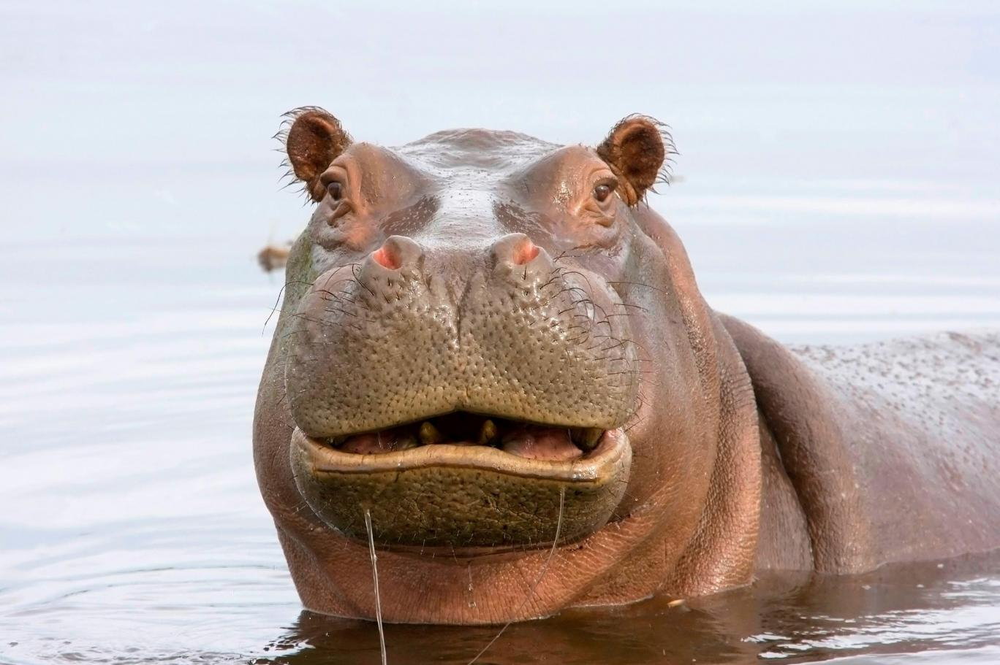

Su aygırı (Hippopotamus amphibius), Afrika’nın büyük nehir ve göl ekosistemlerinde yaşayan, iri gövdesi ve yarı sucul yaşam tarzıyla tanınan bir memelidir. Günün büyük kısmını su içinde geçirerek serinler ve cildini güneşten korur; geceleri ise karaya çıkarak otlarla beslenir. 1,5 tonun üzerine çıkabilen ağırlığına rağmen oldukça çevik olan su aygırı, güçlü çeneleri ve keskin dişleriyle kendini savunabilir. Sosyal bir türdür; genellikle sürüler halinde yaşar ve su kaynaklarının etrafında topluluklar oluşturur. Ekosistemde otçul bir denge unsuru olarak bitki örtüsünü şekillendirirken, kültürel açıdan da Afrika’nın güçlü ve etkileyici hayvanlarından biri olarak bilinir. Hem suya hem karaya uyum sağlamış bu canlı, doğanın en ilginç ve görkemli figürlerinden biridir.